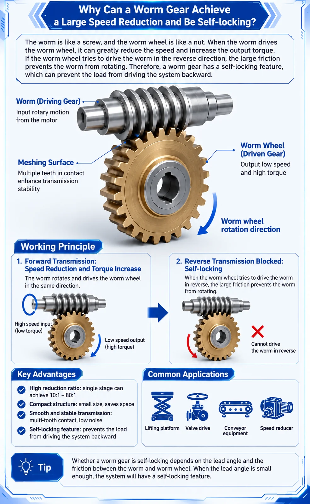

How Does a Worm Gear Drive Work?
A worm gear drive consists of two main parts: the worm and the worm wheel. The worm resembles a screw and normally acts as the driving component. As it rotates, its helical thread pushes against the worm-wheel teeth.
The input and output shafts are typically arranged at 90 degrees, producing a compact right-angle transmission:
High-Speed Input → Worm → Worm Wheel → Low-Speed, High-Torque Output
This principle is widely used in worm gearboxes and NMRV gear reducers as well as worm gear motors.
Why Can a Worm Gear Achieve Such a Large Reduction Ratio?
The reduction ratio is determined by the number of worm starts and the number of teeth on the worm wheel:
Gear Ratio = Worm Wheel Teeth ÷ Worm Starts
If a single-start worm drives a wheel with 50 teeth, the ratio is 50 ÷ 1 = 50:1. The worm therefore rotates approximately 50 times for one complete worm-wheel revolution.
With a motor speed of 1400 rpm:
Output Speed ≈ 1400 ÷ 50 = 28 rpm
This is a major advantage of worm gearing: a large speed reduction can be achieved in one compact gear stage.
Why Does a Worm Gear Increase Torque?
Reducing rotational speed allows the gearbox to provide higher output torque. In simple terms:
High Speed + Low Torque → Low Speed + Higher Torque
Actual output torque is lower than the ideal value because sliding contact between the worm and worm wheel creates friction and energy loss:
Output Torque ≈ Input Torque × Gear Ratio × Efficiency
Ratio alone is not enough for selection. Motor power, required torque, operating time, starting frequency, service factor and ambient conditions must also be checked. See the worm gearbox ratio and torque calculation guide.
Why Can a Worm Gear Be Self-Locking?
The worm normally drives the worm wheel easily. In the reverse direction, an output-side load may try to rotate the worm wheel and drive the worm backward. Under suitable geometry and friction conditions, the tooth contact can resist that reverse motion. This behavior is commonly called self-locking.
The likelihood of self-locking is strongly influenced by the worm lead angle and effective friction. A smaller lead angle can make backdriving more difficult, but real performance changes with lubrication, temperature, wear, vibration and load.
Are All Worm Gearboxes Self-Locking?
No. A worm gearbox must not automatically be treated as self-locking. Backdriving behavior depends on:
- Worm lead angle and number of starts
- Gear ratio
- Friction coefficient
- Lubrication and operating temperature
- Materials and wear condition
- Vibration, shock and external load
Advantages of Worm Gear Drives
- Large reduction ratios in a single stage
- Higher output torque at reduced speed
- Compact 90-degree shaft arrangement
- Smooth and relatively quiet operation
- Potential resistance to backdriving under verified conditions
Worm gearboxes are commonly used in conveyors, packaging machines, mixers, valve actuators, gates, lifting mechanisms and other industrial equipment.
Conclusion
A worm gear achieves a large speed reduction through its screw-like geometry: each worm revolution advances the wheel by only a small amount. Sliding contact also creates friction, so suitable lead-angle and friction conditions may make reverse driving difficult.
This combination of high reduction ratio, increased output torque, compact right-angle transmission and possible resistance to backdriving explains why worm gearboxes remain widely used in industrial machinery.
SMK Transmission supplies NMRV worm gearboxes and worm gear motors. For selection, provide your motor power, input speed, required output speed, output torque, mounting position and application.